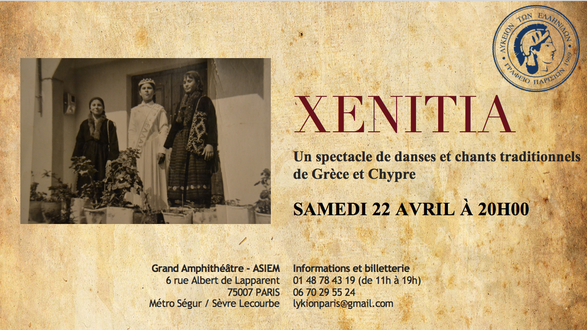

XENITIA 2017

Découvrez la toute dernière production du Lykion Ton Ellinidon - Bureau de Paris ! XENITIA, un spectacle de danses et chants traditionnels de la Grèce et de Chypre placé sous le thème de la migration et de l’exil.